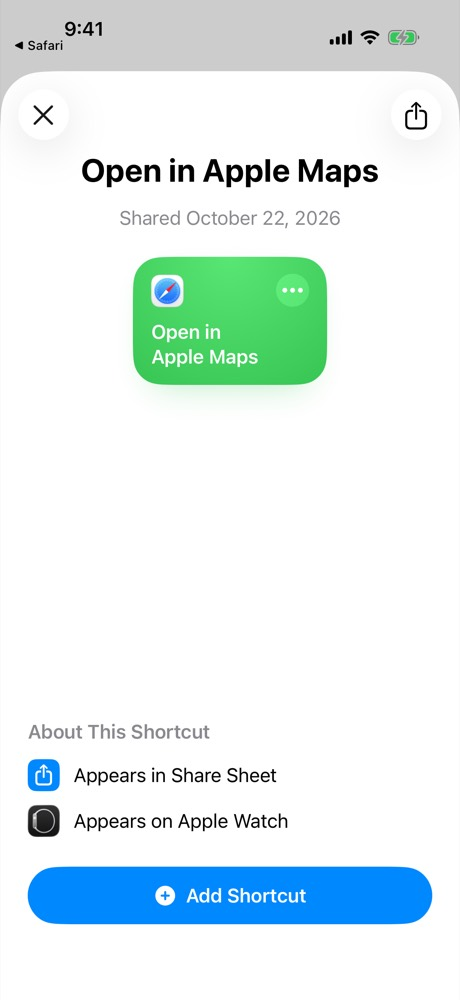
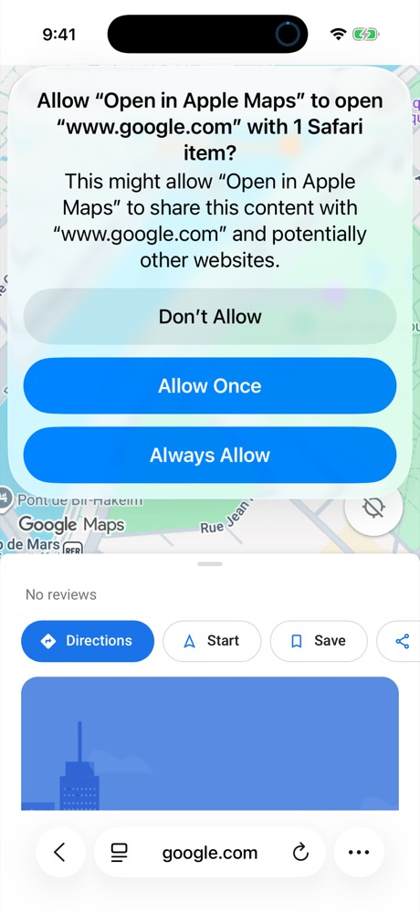
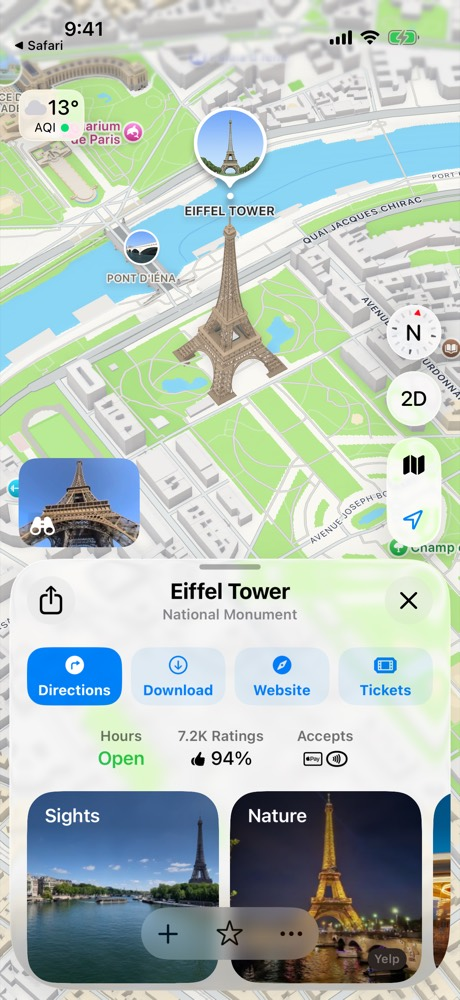

Open Google Maps links in Apple Maps on iPhone
A free shortcut that adds Open in Apple Maps to your share sheet.
Get the shortcutHow it looks

Step 3, first time only
Tap Always Allow
iOS asks once per website. It won't ask again.


Tips
The link is on my clipboard
Run the shortcut from the Shortcuts app; it reads the clipboard.
Apple Maps opened a spot nearby
Share the original link from the message, not the Google Maps page in Safari, which drops the exact pin.
Without the shortcut?
Paste the link into the web converter.